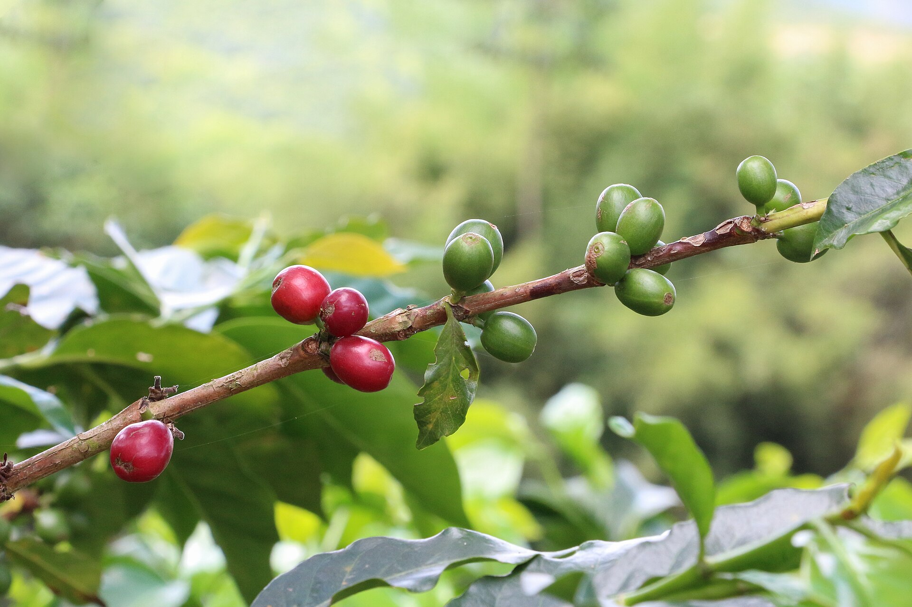
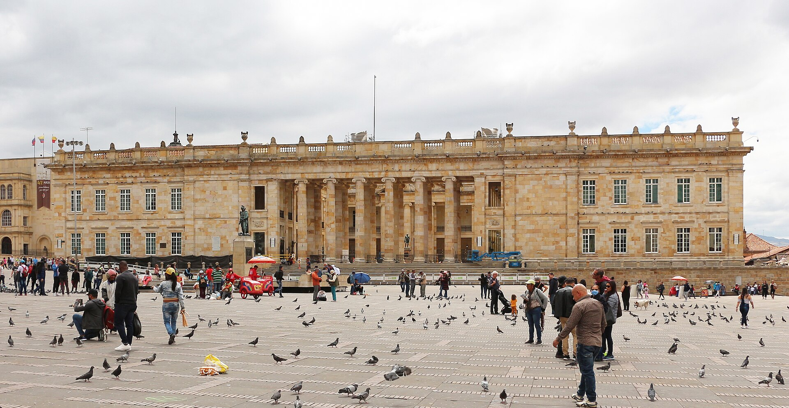

Colonial y republicana
Haciendas, minería y comercio
La economía colonial se apoyó en haciendas, minería, comercio regional y trabajo indígena y esclavizado. Tras la Independencia, las instituciones republicanas ampliaron los mercados y las exportaciones, aunque mantuvieron concentraciones de tierra y poder.
Productos clave
Sectores productivos
Café
Transformó economías regionales, asentamientos, ferrocarriles y redes familiares entre los siglos XIX y XX.
Banano
Creció para exportación en regiones del Caribe y fue escenario de conflictos laborales como la huelga de 1928.
Petróleo
Contribuyó a ingresos fiscales y proyectos regionales, además de tensionar territorios y comunidades.
Carbón y minería
El carbón, metales y piedras preciosas se relacionan con exportaciones y disputas ambientales y laborales.
Industria textil
Antioquia y Valle desarrollaron textiles, confecciones y empresas nacionales durante el siglo XX.
Infraestructura
Carreteras, ferrocarriles, puertos y energía hicieron posible una mayor integración nacional, con grandes brechas regionales.


Inestabilidad y reformas
Crisis económicas y apertura
El país afrontó crisis cafetera, deuda externa, inflación, choques petroleros y cambios cambiarios. En los años noventa se profundizó la apertura económica, la privatización parcial y la reforma del Estado.
La apertura redujo barreras comerciales, pero cambió cadenas productivas y aumentó la exposición a mercados globales. Sus efectos siguen evaluándose de forma diferenciada por sectores y regiones.
Trabajo
Salario, pobreza y economía informal
El salario mínimo regula una parte del mercado laboral, pero millones de personas trabajan en economía informal sin protección suficiente. La pobreza y la desigualdad varían por región, edad, género y pertenencia étnica.
Desempleo
El empleo formal fluctúa con el crecimiento económico, los costos laborales y las crisis externas.
Impuestos y deuda
Los ingresos fiscales financian educación, salud y programas sociales; la deuda pública exige comparar ingresos, gasto y crecimiento.
Desigualdad
La concentración de tierra, ingresos y riqueza sigue siendo una característica central del desarrollo colombiano.
Trabajo campesino
Pequeños productores enfrentan acceso limitado a crédito, vías, agua y mercados.
Actualidad
Principales sectores en 2026
Servicios, comercio, construcción, agricultura, manufactura, minería, industria creativa y turismo representan los principales campos de actividad. Las decisiones sobre transición energética, reforma tributaria, vivienda y competencia siguen influyendo en el crecimiento.
Página relacionada
Cultura y vida cotidiana
Explora ciudades, música, literatura, arte, educación, deporte y medios en una sección independiente.
Abrir Cultura colombiana →Datos históricos y actuales